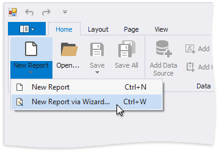
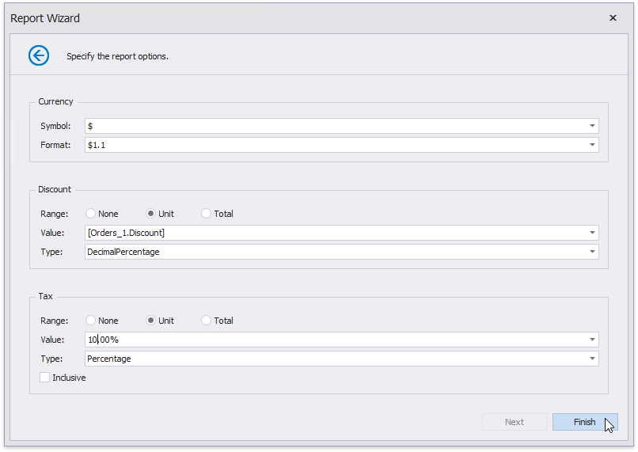
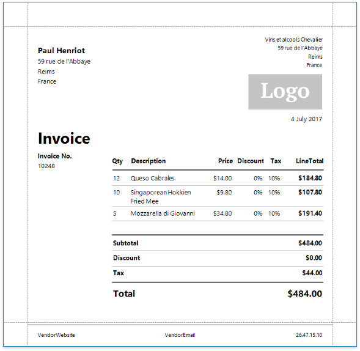

Invoices from Templates
This document describes how to create an invoice report based on a predefined template using the Report Wizard.
Note
See the Invoices topic for information on how to create an invoice report with a custom layout from scratch.
Do the following to select an invoice template and configure its settings:
Click New Report via Wizard in the Toolbar's Home tab.

On the first wizard page, select Template and click Next.

On the next wizard page, choose the report template that specifies elements' arrangement and appearance settings.

Click Next to proceed to the next wizard page.
The following page allows you to select a data source's type that provides data to your report. Choose Database and click Next.

On the next wizard page, specify whether you want to use an existing data connection or create a new one. For this tutorial, select an existing connection and click Next.

The following wizard page has a list on the right-hand side displaying the selected template's available fields. On the left-hand side, you can choose a table, view or stored procedure containing the data fields corresponding to the template fields. You do not need to provide data to all template fields.
You can combine several different tables' or views' data fields by creating a custom query. Click the Queries category's plus button, and in the invoked Query Builder, join data tables and views based on key columns.

Click Next on the wizard page to continue report creation.
The next wizard page enables you to specify the relationships between the data source' s fields and predefined template fields.
Drag and drop the required data field form the tree on the left-hand side onto the corresponding template field's column.

You can also select a data field from the Template Field Value drop-down list or manually enter a static field value in this column.
If you do not provide values to specific template fields, the corresponding elements are automatically added to the resulting report.
Click Next to proceed.
On the last wizard page, select the currency symbol and price values' format.
You can also specify the following discount/tax options:
- Range - Defines whether the discount/tax value should not be taken into account (None), or should be used for individual items (Unit) or the entire order (Total).
- Value- Specifies the discount/tax value that can be static or bound to the data source field.
- Type - Specifies the type of the discount/tax value (flat, fixed or percentage).
Inclusive (for the tax only) - Indicates whether the tax value is included in product prices.

Click Finish to complete the wizard and get the report layout according to the selected template and specified options.

Switch to Print Preview to see the result.
